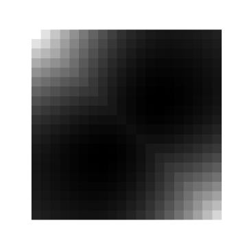
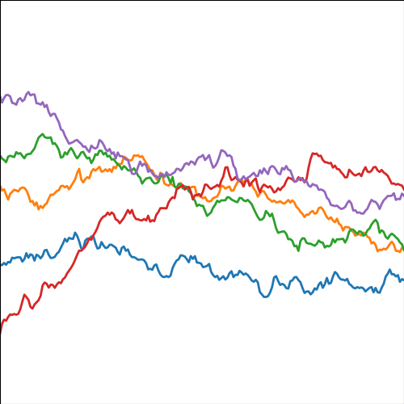

RELU Covariance
\n
\kernelScalar(\inputVector, \inputVector^\prime) = �rac{\|\inputVector\| \|\inputVector^\prime\|}{2\pi} \left(\pi - �rccos\left(�rac{\inputVector^ op \inputVector^\prime + b}{\|\inputVector\| \|\inputVector^\prime\|}
ight)
ight)\n  |  |
\n